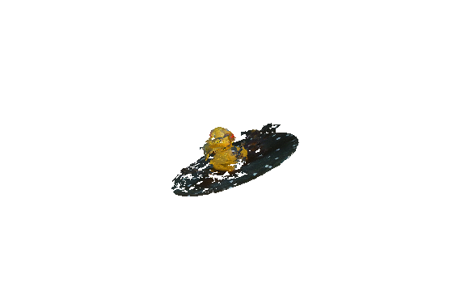

<br>
#### Week 4: 3D Printing
This week I made my very first 3D print! I've only ever handled 3D printed objects, but never printed or designed anything to be printed myself, so this was a very exciting week for me.
<h4>3D Printing a Hook</h4>
I ended up making a small hook to hang up some decorations in my dorm room. Here it is on the printer.
<br>
<img src='hook_inuse.jpg' width="300px" position="relate">
<br>
I printed it with supports under the actual hook, so I had to remove those after it printed. Here it is from the side after removing supports.
<br>
<img src='hook_profile.jpg' width="300px" position="relate">
<br>
And here it is in use in my room!
<br>
<img src='hook_printed.jpg' width="300px" position="relate">
<br>
I designed the hook in Fusion by extruding various shapes from sketches, combining them together, and filleting/chamfering a bit. Check it out!
<br>
<img src='hook_ss.png' width="500px" position="relate">
<br>
<iframe src="https://college470.autodesk360.com/shares/public/SH35dfcQT936092f0e4310a2f072012ccffb?mode=embed" width="640" height="480" allowfullscreen="true" webkitallowfullscreen="true" mozallowfullscreen="true" frameborder="0"></iframe>
You can download my Fusion file, STL file, and gcode here.
<a download href='hook v1.f3d'>Download my Fusion file </a>
<br>
<a download href='Nina_hook_v1.stl'>Download my STL file </a>
<br>
<a download href='Nina_hook_v1_0.3mm_PLA_MK3S_12m.gcode'>Download my gcode </a>
<h4> Scanning </h4>
Part of the assignment this week was also to scan something. I tried to scan a few different things.
Here's a pretty bad scan of a rubber duck made with the Sense Scan. I found it was really finicky and hard to use, plus it fused things together wrong, as you can see here in the model it generated. Looks like a two-headed rubber duck.

Click [here](../index.html) to return to the homepage.